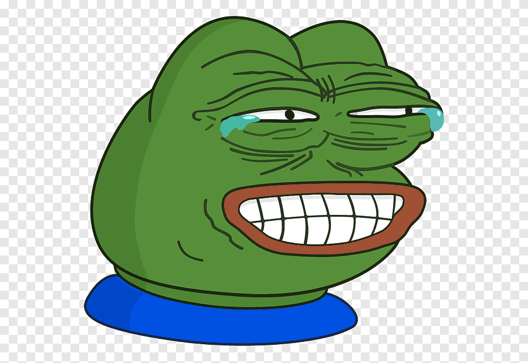
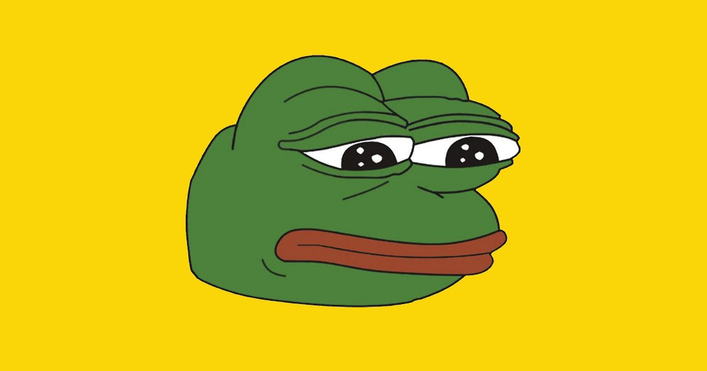

2 paragraph different fonts
There are many different types of conversations. If me and my dog can talk to each other, it's called a DYADIC conversation. If me and my dogs talks through a video or text, it means we communicate SYNCHRONOUSLY. If I talk to many people at once, it's called BROADCAST conversation. I usually talk to my friends on Facebook Messengers, that is our BACKCHANNEL. Sometimes when I text my friends, it takes them a while to reply, that is ASYNCHRONOUS conversation
I always RETWEET posts from my favorite singers on Twitter. Celebrity often has different ways to delivery same messages for his/her fans of different ages, this is called NARROWCAST. I use Twitter too much and I think everything on the internet is good, so I have NET DELUSION. Electronic devices is important to me, so I don't like the idea of DICTATOR'S DILEMMA because it might forbid me to use social network like Twitter, Facebook...
2 50px-images
 CSS command that was not discussed in the workshop
Text that is centered on a photo
A photo with 20 pixel margins on each side
Text with a border that uses dotted lines
An external style sheet
A floated element
text with rounded border corners